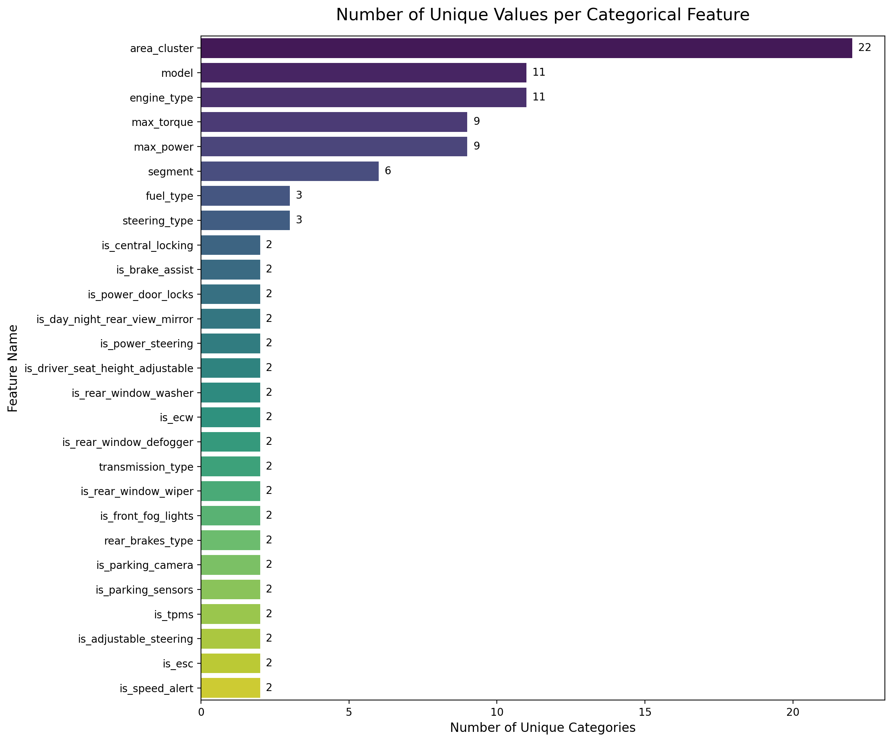
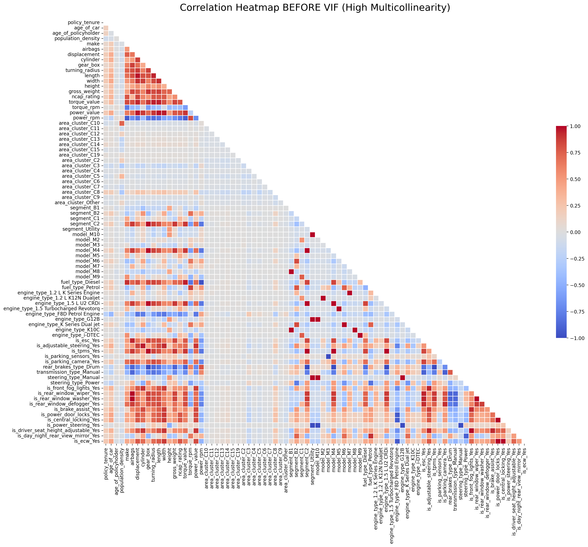
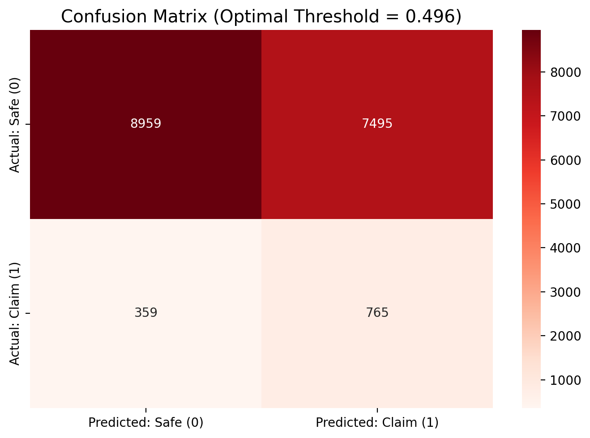
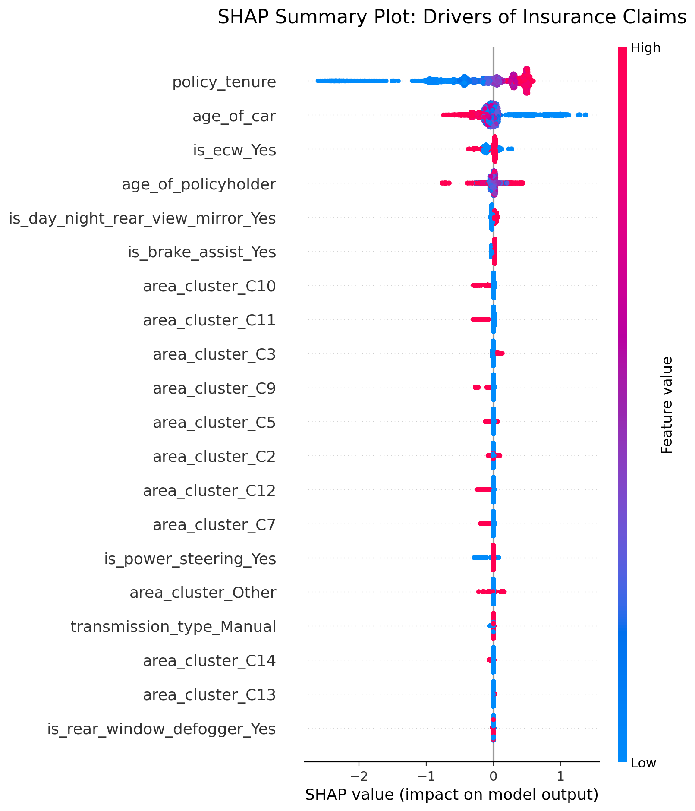

Code
import pandas as pd
df_claim = pd.read_csv('data/train.csv')Only about 6% of the policies in this dataset ever file a claim. That imbalance makes claim prediction a genuinely hard problem: accuracy is meaningless, and a model that never flags anyone scores 94%. This notebook walks the full pipeline — data engineering, multicollinearity pruning, statistical feature selection, a model bake-off, and business-aware threshold tuning — with the goal of catching as many real claims as possible at an acceptable false-alarm rate.
| Variable | Description |
|---|---|
| policy_id | Unique identifier of the policyholder |
| policy_tenure | Time period of the policy |
| age_of_car | Normalized age of the car in years |
| age_of_policyholder | Normalized age of policyholder in years |
| area_cluster | Area cluster of the policyholder |
| population | density Population density of the city (Policyholder City) |
| make | Encoded Manufacturer/company of the car |
| segment | Segment of the car (A/ B1/ B2/ C1/ C2) |
| model | Encoded name of the car |
| fuel_type | Type of fuel used by the car |
| max_torque | Maximum Torque generated by the car (Nm@rpm) |
| max_power | Maximum Power generated by the car (bhp@rpm) |
| engine_type | Type of engine used in the car |
| airbags | Number of airbags installed in the car |
| is_esc | Boolean flag indicating whether Electronic Stability Control (ESC) is present in the car or not. |
| is_adjustable_steering | Boolean flag indicating whether the steering wheel of the car is adjustable or not. |
| is_tpms | Boolean flag indicating whether Tyre Pressure Monitoring System (TPMS) is present in the car or not. |
| is_parking_sensors | Boolean flag indicating whether parking sensors are present in the car or not. |
| is_parking_camera | Boolean flag indicating whether the parking camera is present in the car or not. |
| rear_brakes_type | Type of brakes used in the rear of the car |
| displacement | Engine displacement of the car (cc) |
| cylinder | Number of cylinders present in the engine of the car |
| transmission_type | Transmission type of the car |
| gear_box | Number of gears in the car |
| steering_type | Type of the power steering present in the car |
| turning_radius | The space a vehicle needs to make a certain turn (Meters) |
| length | Length of the car (Millimetre) |
| width | Width of the car (Millimetre) |
| height | Height of the car (Millimetre) |
| gross_weight | The maximum allowable weight of the fully-loaded car, including passengers, cargo and equipment (Kg) |
| is_front_fog_lights | Boolean flag indicating whether front fog lights are available in the car or not. |
| is_rear_window_wiper | Boolean flag indicating whether the rear window wiper is available in the car or not. |
| is_rear_window_washer | Boolean flag indicating whether the rear window washer is available in the car or not. |
| is_rear_window_defogger | Boolean flag indicating whether rear window defogger is available in the car or not. |
| is_brake_assist | Boolean flag indicating whether the brake assistance feature is available in the car or not. |
| is_power_door_lock | Boolean flag indicating whether a power door lock is available in the car or not. |
| is_central_locking | Boolean flag indicating whether the central locking feature is available in the car or not. |
| is_power_steering | Boolean flag indicating whether power steering is available in the car or not. |
| is_driver_seat_height_adjustable | Boolean flag indicating whether the height of the driver seat is adjustable or not. |
| is_day_night_rear_view_mirror | Boolean flag indicating whether day & night rearview mirror is present in the car or not. |
| is_ecw | Boolean flag indicating whether Engine Check Warning (ECW) is available in the car or not. |
| is_speed_alert | Boolean flag indicating whether the speed alert system is available in the car or not. |
| ncap_rating | Safety rating given by NCAP (out of 5) |
| is_claim | Outcome: Boolean flag indicating whether the policyholder file a claim in the next 6 months or not. |
policy_id policy_tenure age_of_car age_of_policyholder area_cluster \
0 ID00001 0.515874 0.05 0.644231 C1
1 ID00002 0.672619 0.02 0.375000 C2
2 ID00003 0.841110 0.02 0.384615 C3
3 ID00004 0.900277 0.11 0.432692 C4
4 ID00005 0.596403 0.11 0.634615 C5
population_density make segment model fuel_type ... is_brake_assist \
0 4990 1 A M1 CNG ... No
1 27003 1 A M1 CNG ... No
2 4076 1 A M1 CNG ... No
3 21622 1 C1 M2 Petrol ... Yes
4 34738 2 A M3 Petrol ... No
is_power_door_locks is_central_locking is_power_steering \
0 No No Yes
1 No No Yes
2 No No Yes
3 Yes Yes Yes
4 Yes Yes Yes
is_driver_seat_height_adjustable is_day_night_rear_view_mirror is_ecw \
0 No No No
1 No No No
2 No No No
3 Yes Yes Yes
4 No Yes Yes
is_speed_alert ncap_rating is_claim
0 Yes 0 0
1 Yes 0 0
2 Yes 0 0
3 Yes 2 0
4 Yes 2 0
[5 rows x 44 columns]
<class 'pandas.DataFrame'>
RangeIndex: 58592 entries, 0 to 58591
Data columns (total 44 columns):
# Column Non-Null Count Dtype
--- ------ -------------- -----
0 policy_id 58592 non-null str
1 policy_tenure 58592 non-null float64
2 age_of_car 58592 non-null float64
3 age_of_policyholder 58592 non-null float64
4 area_cluster 58592 non-null str
5 population_density 58592 non-null int64
6 make 58592 non-null int64
7 segment 58592 non-null str
8 model 58592 non-null str
9 fuel_type 58592 non-null str
10 max_torque 58592 non-null str
11 max_power 58592 non-null str
12 engine_type 58592 non-null str
13 airbags 58592 non-null int64
14 is_esc 58592 non-null str
15 is_adjustable_steering 58592 non-null str
16 is_tpms 58592 non-null str
17 is_parking_sensors 58592 non-null str
18 is_parking_camera 58592 non-null str
19 rear_brakes_type 58592 non-null str
20 displacement 58592 non-null int64
21 cylinder 58592 non-null int64
22 transmission_type 58592 non-null str
23 gear_box 58592 non-null int64
24 steering_type 58592 non-null str
25 turning_radius 58592 non-null float64
26 length 58592 non-null int64
27 width 58592 non-null int64
28 height 58592 non-null int64
29 gross_weight 58592 non-null int64
30 is_front_fog_lights 58592 non-null str
31 is_rear_window_wiper 58592 non-null str
32 is_rear_window_washer 58592 non-null str
33 is_rear_window_defogger 58592 non-null str
34 is_brake_assist 58592 non-null str
35 is_power_door_locks 58592 non-null str
36 is_central_locking 58592 non-null str
37 is_power_steering 58592 non-null str
38 is_driver_seat_height_adjustable 58592 non-null str
39 is_day_night_rear_view_mirror 58592 non-null str
40 is_ecw 58592 non-null str
41 is_speed_alert 58592 non-null str
42 ncap_rating 58592 non-null int64
43 is_claim 58592 non-null int64
dtypes: float64(4), int64(12), str(28)
memory usage: 19.7 MBSome variable types don’t make sense at first glance, so we audit them before modeling.
policy_id should be dropped for the feature selection.
import matplotlib.pyplot as plt
import pandas as pd
import seaborn as sns
unique_counts = {}
for col in df_claim.columns:
if (df_claim[col].dtype == 'object' or df_claim[col].dtype == 'str') and col != 'policy_id':
unique_counts[col] = df_claim[col].nunique()
df_unique = pd.DataFrame(list(unique_counts.items()), columns=['Feature', 'Unique_Count'])
df_unique = df_unique.sort_values(by='Unique_Count', ascending=False)
plt.figure(figsize=(12, 10))
sns.barplot(
x='Unique_Count',
y='Feature',
data=df_unique,
palette='viridis',
hue='Feature',
legend=False
)
plt.title('Number of Unique Values per Categorical Feature', fontsize=16, pad=15)
plt.xlabel('Number of Unique Categories', fontsize=12)
plt.ylabel('Feature Name', fontsize=12)
for index, value in enumerate(df_unique['Unique_Count']):
plt.text(value + 0.2, index, str(value), va='center', fontsize=10)
plt.tight_layout()
plt.show()
Possible model:
['M1', 'M2', 'M3', 'M4', 'M5', 'M6', 'M7', 'M8', 'M9', 'M10', 'M11']
Possible segments:
['A', 'C1', 'C2', 'B2', 'B1', 'Utility']
Possible engine types:
['F8D Petrol Engine', '1.2 L K12N Dualjet', '1.0 SCe', '1.5 L U2 CRDi', '1.5 Turbocharged Revotorq', 'K Series Dual jet', '1.2 L K Series Engine', 'K10C', 'i-DTEC', 'G12B', '1.5 Turbocharged Revotron']To preserve signal while preventing high-cardinality explosion, any category that accounts for less than 1% of observations (min_frequency=0.01) is bucketed: - If two or more categories are rare within a column, they are grouped into a consolidated 'Other' category. - If only a single category is rare, it is absorbed into the majority class.
By bucketing rare categories, we protect downstream models from overfitting to sparse values that lack sufficient sample support for generalization.
def clean_insurance_data(df, min_frequency=0.01):
"""
Cleans the specific car insurance dataset for statsmodels regression.
Handles string parsing, binary mapping, rare category bucketing, and dummy encoding.
Any category with fewer `min_frequency` (total rows are 58,592 so 586 as default value)
"""
print("Starting data clean-up...")
df_clean = df.copy()
if 'policy_id' in df_clean.columns:
df_clean = df_clean.drop('policy_id', axis=1)
print("Dropped 'policy_id'.")
print("Parsing torque and power strings into numbers...")
regex_pattern = r'([\d\.]+).*?@.*?([\d\.]+)'
if 'max_torque' in df_clean.columns:
df_clean[['torque_value', 'torque_rpm']] = df_clean['max_torque'].str.extract(regex_pattern).astype(float)
df_clean = df_clean.drop('max_torque', axis=1)
if 'max_power' in df_clean.columns:
df_clean[['power_value', 'power_rpm']] = df_clean['max_power'].str.extract(regex_pattern).astype(float)
df_clean = df_clean.drop('max_power', axis=1)
print("Mapping 'is_' columns to 1 and 0...")
binary_cols = [col for col in df_clean.columns if col.startswith('is_') and col != 'is_claim']
for col in binary_cols:
if df_clean[col].dtype == 'object':
df_clean[col] = df_clean[col].map({'Yes': 1, 'No': 0, 'yes': 1, 'no': 0})
df_clean = df_clean.dropna()
print(f"Bucketing rare categories (threshold: < {min_frequency * 100}% of data)...")
categorical_cols = df_clean.select_dtypes(include=['object', 'str']).columns
for col in categorical_cols:
frequencies = df_clean[col].value_counts(normalize=True)
rare_categories = frequencies[frequencies < min_frequency].index
if len(rare_categories) > 1:
df_clean[col] = df_clean[col].replace(rare_categories, 'Other')
print(f" - '{col}': grouped {len(rare_categories)} rare values into 'Other'")
elif len(rare_categories) == 1:
majority_class = frequencies.idxmax()
df_clean[col] = df_clean[col].replace(rare_categories, majority_class)
print(f" - '{col}': absorbed 1 sparse value into majority class '{majority_class}'")
print("Applying dummy encoding (drop_first=True)...")
df_clean = pd.get_dummies(df_clean, drop_first=True, dtype=float)
print("-" * 40)
print(f"Clean-up complete! Final dataset shape: {df_clean.shape}")
X = df_clean.drop('is_claim', axis=1)
y = df_clean['is_claim']
return X, yimport matplotlib.pyplot as plt
import seaborn as sns
import numpy as np
def plot_correlation_heatmap(df_features, title):
"""
Plots a highly formatted, readable correlation heatmap for large datasets.
"""
corr = df_features.corr()
mask = np.triu(np.ones_like(corr, dtype=bool))
plt.figure(figsize=(20, 16))
sns.heatmap(
corr,
mask=mask,
cmap='coolwarm',
vmin=-1, vmax=1,
square=True,
linewidths=.5,
cbar_kws={"shrink": .5}
)
plt.title(title, fontsize=20, pad=20)
plt.tight_layout()
plt.show()Starting data clean-up...
Dropped 'policy_id'.
Parsing torque and power strings into numbers...
Mapping 'is_' columns to 1 and 0...
Bucketing rare categories (threshold: < 1.0% of data)...
- 'area_cluster': grouped 6 rare values into 'Other'
- 'model': absorbed 1 sparse value into majority class 'M1'
- 'engine_type': absorbed 1 sparse value into majority class 'F8D Petrol Engine'
- 'is_speed_alert': absorbed 1 sparse value into majority class 'Yes'
Applying dummy encoding (drop_first=True)...
----------------------------------------
Clean-up complete! Final dataset shape: (58592, 81)
Multicollinearity occurs when two or more predictor variables in a regression model are highly linearly correlated, providing overlapping information about the outcome.
For example, in real estate pricing, square footage and room count—or redundant location proxies like zip code, county, and neighborhood—provide heavily overlapping signals.
Collinearity inflates the variance of coefficient estimates and destabilizes parameter signs. In a linear model, the solver may compensate by assigning an artificially large positive weight to one collinear feature and a large negative weight to its duplicate. When evaluating unseen data where that balance shifts slightly, predictions can swing wildly, destroying interpretability and generalizability.
graph LR
A( Model gets confused ) --> B( Math breaks down ) --> C( You can't trust the numbers) --> D( You can't interpret the results ) --> E( You can't act on them )Starting VIF Multicollinearity Check...
----------------------------------------
Dropped: 'make' (VIF: inf)
Dropped: 'airbags' (VIF: inf)
Dropped: 'displacement' (VIF: inf)
Dropped: 'cylinder' (VIF: inf)
Dropped: 'gear_box' (VIF: inf)
Dropped: 'turning_radius' (VIF: inf)
Dropped: 'length' (VIF: inf)
Dropped: 'width' (VIF: inf)
Dropped: 'height' (VIF: inf)
Dropped: 'gross_weight' (VIF: inf)
Dropped: 'ncap_rating' (VIF: inf)
Dropped: 'torque_value' (VIF: inf)
Dropped: 'torque_rpm' (VIF: inf)
Dropped: 'power_value' (VIF: inf)
Dropped: 'power_rpm' (VIF: inf)
Dropped: 'segment_B1' (VIF: inf)
Dropped: 'segment_B2' (VIF: inf)
Dropped: 'segment_C1' (VIF: inf)
Dropped: 'segment_C2' (VIF: inf)
Dropped: 'segment_Utility' (VIF: inf)
Dropped: 'model_M10' (VIF: inf)
Dropped: 'model_M2' (VIF: inf)
Dropped: 'model_M3' (VIF: inf)
Dropped: 'model_M4' (VIF: inf)
Dropped: 'model_M5' (VIF: inf)
Dropped: 'model_M6' (VIF: inf)
Dropped: 'model_M7' (VIF: inf)
Dropped: 'model_M8' (VIF: inf)
Dropped: 'model_M9' (VIF: inf)
Dropped: 'fuel_type_Diesel' (VIF: inf)
Dropped: 'fuel_type_Petrol' (VIF: inf)
Dropped: 'engine_type_1.2 L K Series Engine' (VIF: inf)
Dropped: 'engine_type_1.2 L K12N Dualjet' (VIF: inf)
Dropped: 'engine_type_1.5 L U2 CRDi' (VIF: inf)
Dropped: 'engine_type_1.5 Turbocharged Revotorq' (VIF: inf)
Dropped: 'engine_type_F8D Petrol Engine' (VIF: inf)
Dropped: 'engine_type_G12B' (VIF: inf)
Dropped: 'engine_type_K Series Dual jet' (VIF: inf)
Dropped: 'engine_type_K10C' (VIF: inf)
Dropped: 'engine_type_i-DTEC' (VIF: inf)
Dropped: 'is_esc_Yes' (VIF: inf)
Dropped: 'is_adjustable_steering_Yes' (VIF: inf)
Dropped: 'is_tpms_Yes' (VIF: inf)
Dropped: 'is_parking_sensors_Yes' (VIF: inf)
Dropped: 'is_parking_camera_Yes' (VIF: inf)
Dropped: 'rear_brakes_type_Drum' (VIF: inf)
Dropped: 'steering_type_Manual' (VIF: inf)
Dropped: 'is_rear_window_wiper_Yes' (VIF: inf)
Dropped: 'is_power_door_locks_Yes' (VIF: inf)
Dropped: 'is_central_locking_Yes' (VIF: inf)
Dropped: 'is_driver_seat_height_adjustable_Yes' (VIF: 178.12)
Dropped: 'is_front_fog_lights_Yes' (VIF: 18.56)
Dropped: 'population_density' (VIF: 17.91)
Dropped: 'is_rear_window_washer_Yes' (VIF: 12.83)
Dropped: 'steering_type_Power' (VIF: 11.69)
Dropped: 'area_cluster_C8' (VIF: 8.20)
----------------------------------------
VIF Check Complete!
Features dropped: 56['make', 'airbags', 'displacement', 'cylinder', 'gear_box', 'turning_radius', 'length', 'width', 'height', 'gross_weight', 'ncap_rating', 'torque_value', 'torque_rpm', 'power_value', 'power_rpm', 'segment_B1', 'segment_B2', 'segment_C1', 'segment_C2', 'segment_Utility', 'model_M10', 'model_M2', 'model_M3', 'model_M4', 'model_M5', 'model_M6', 'model_M7', 'model_M8', 'model_M9', 'fuel_type_Diesel', 'fuel_type_Petrol', 'engine_type_1.2 L K Series Engine', 'engine_type_1.2 L K12N Dualjet', 'engine_type_1.5 L U2 CRDi', 'engine_type_1.5 Turbocharged Revotorq', 'engine_type_F8D Petrol Engine', 'engine_type_G12B', 'engine_type_K Series Dual jet', 'engine_type_K10C', 'engine_type_i-DTEC', 'is_esc_Yes', 'is_adjustable_steering_Yes', 'is_tpms_Yes', 'is_parking_sensors_Yes', 'is_parking_camera_Yes', 'rear_brakes_type_Drum', 'steering_type_Manual', 'is_rear_window_wiper_Yes', 'is_power_door_locks_Yes', 'is_central_locking_Yes', 'is_driver_seat_height_adjustable_Yes', 'is_front_fog_lights_Yes', 'population_density', 'is_rear_window_washer_Yes', 'steering_type_Power', 'area_cluster_C8']53018VIF_i = rac{1}{1 - R_i^2}53018
We apply a strict stopping rule of \(\le 5.0\): 1. Calculate VIF across all current features in the dataset. 2. Identify the single feature with the highest VIF exceeding .0$ and drop it. 3. Recalculate VIF across all remaining features (dropping one collinear variable immediately deflates the inflated VIF scores of its correlated peers). 4. Repeat iteratively until every remaining feature satisfies \(\le 5.0\).
Before deploying complex machine learning algorithms, we fit an interpretable statistical baseline using Bidirectional Stepwise Logistic Regression (stepwise_selection_logit).
Starting with an empty model, the algorithm tests features in alternating steps:
This distills the post-VIF feature space down to the core subset with rigorous statistical evidence of predicting claims. The resulting log-odds coefficients (\(\beta\)) provide underwriters with transparent, auditable factors rather than a black-box model.
['policy_tenure', 'age_of_car', 'age_of_policyholder', 'area_cluster_C10', 'area_cluster_C11', 'area_cluster_C12', 'area_cluster_C13', 'area_cluster_C14', 'area_cluster_C15', 'area_cluster_C19', 'area_cluster_C2', 'area_cluster_C3', 'area_cluster_C4', 'area_cluster_C5', 'area_cluster_C6', 'area_cluster_C7', 'area_cluster_C9', 'area_cluster_Other', 'transmission_type_Manual', 'is_rear_window_defogger_Yes', 'is_brake_assist_Yes', 'is_power_steering_Yes', 'is_day_night_rear_view_mirror_Yes', 'is_ecw_Yes']
Starting Stepwise Selection using Logit...
----------------------------------------
Added: 'policy_tenure' (p-value: 0.0000)
Added: 'age_of_car' (p-value: 0.0000)
Added: 'area_cluster_C3' (p-value: 0.0015)
Added: 'area_cluster_C2' (p-value: 0.0022)
Added: 'is_brake_assist_Yes' (p-value: 0.0062)
Added: 'area_cluster_C14' (p-value: 0.0269)
Added: 'age_of_policyholder' (p-value: 0.0283)
Added: 'area_cluster_C4' (p-value: 0.0257)
Added: 'area_cluster_C10' (p-value: 0.0481)
Added: 'area_cluster_C9' (p-value: 0.0447)
Dropped: 'area_cluster_C14' (p-value: 0.0506)
----------------------------------------
Stepwise Selection Complete!
Final number of features: 9| Dep. Variable: | is_claim | No. Observations: | 58592 |
|---|---|---|---|
| Model: | Logit | Df Residuals: | 58582 |
| Method: | MLE | Df Model: | 9 |
| Date: | Wed, 16 Sep 2026 | Pseudo R-squ.: | 0.01877 |
| Time: | 20:29:12 | Log-Likelihood: | -13669. |
| converged: | True | LL-Null: | -13930. |
| Covariance Type: | nonrobust | LLR p-value: | 7.379e-107 |
| coef | std err | z | P>|z| | [0.025 | 0.975] | |
|---|---|---|---|---|---|---|
| const | -3.2405 | 0.076 | -42.579 | 0.000 | -3.390 | -3.091 |
| policy_tenure | 0.8462 | 0.044 | 19.136 | 0.000 | 0.760 | 0.933 |
| age_of_car | -3.5342 | 0.349 | -10.115 | 0.000 | -4.219 | -2.849 |
| area_cluster_C3 | 0.1949 | 0.056 | 3.500 | 0.000 | 0.086 | 0.304 |
| area_cluster_C2 | 0.1405 | 0.050 | 2.790 | 0.005 | 0.042 | 0.239 |
| is_brake_assist_Yes | 0.0946 | 0.037 | 2.535 | 0.011 | 0.021 | 0.168 |
| age_of_policyholder | 0.3080 | 0.136 | 2.258 | 0.024 | 0.041 | 0.575 |
| area_cluster_C4 | 0.2916 | 0.148 | 1.968 | 0.049 | 0.001 | 0.582 |
| area_cluster_C10 | -0.1989 | 0.088 | -2.271 | 0.023 | -0.371 | -0.027 |
| area_cluster_C9 | -0.1963 | 0.091 | -2.158 | 0.031 | -0.375 | -0.018 |
The regression table above and coefficient plot below display the estimated log-odds coefficients (\(\beta\)) with 95% confidence intervals from the Stepwise Logistic Regression model. The baseline (dashed line at \(0.0\)) represents no effect. Because coefficients represent log-odds, their exponentiated values yield the Odds Ratio (\(OR = e^\beta\)):
age_of_car: \(\beta = -3.53\), \(OR \approx 0.03\))policy_tenure: \(\beta = +0.85\), \(OR \approx 2.33\))age_of_policyholder: \(\beta = +0.31\), \(OR \approx 1.36\))area_cluster)C4 (\(\beta = +0.29\)), C3 (\(\beta = +0.19\)), and C2 (\(\beta = +0.14\)) significantly elevate claim odds.C9 (\(\beta = -0.20\)) and C10 (\(\beta = -0.20\)) significantly reduce claim odds.is_brake_assist_Yes: \(\beta = +0.09\), \(OR \approx 1.10\))We now benchmark three model families under standardized conditions with 5-fold cross-validation and class_weight='balanced': - Logistic Regression (linear baseline, wrapped in a pipeline with StandardScaler to prevent CV fold leakage) - Random Forest (bagging ensemble, trained on unscaled features) - HistGradientBoosting (gradient boosting ensemble, trained on unscaled features)
Note on feature space: While Stepwise Selection in Section 4 isolated the key linear drivers for inference, we supply the full post-VIF feature space (X_clean) to the bake-off. This allows the non-linear ensembles to evaluate multi-way feature interactions that a linear logit model cannot represent.
from sklearn.pipeline import Pipeline
from sklearn.preprocessing import StandardScaler
from sklearn.ensemble import HistGradientBoostingClassifier, RandomForestClassifier
from sklearn.linear_model import LogisticRegression
from sklearn.model_selection import GridSearchCV, train_test_split
import time
seed = 42
logReg = 'Logistic Regression'
forest = 'Random Forest'
hist = 'HistGradientBoosting'
models = {
logReg: Pipeline([
('scaler', StandardScaler()),
('clf', LogisticRegression(class_weight='balanced', max_iter=1000, random_state=seed))
]),
forest: RandomForestClassifier(class_weight='balanced', random_state=seed),
hist: HistGradientBoostingClassifier(class_weight='balanced', random_state=seed)
}
param_grids = {
logReg: {
'clf__C': [0.01, 0.1, 1.0, 10.0],
'clf__solver': ['liblinear', 'saga']
},
forest: {
'n_estimators': [100, 300],
'max_depth': [5, 10, 15],
'min_samples_leaf': [2, 5, 10]
},
hist: {
'learning_rate': [0.01, 0.05, 0.1],
'max_iter': [100, 300],
'max_depth': [3, 5, 7],
'l2_regularization': [0.0, 1.0]
}
}
best_models = {}
best_scores = {}
if 'const' in X_clean.columns:
X_clean = X_clean.drop('const', axis=1)
X_train, X_test, y_train, y_test = train_test_split(
X_clean, y, test_size=0.3, random_state=seed, stratify=y
)
for name in models.keys():
print(f"Running Grid Search for {name}...")
start_time = time.time()
grid = GridSearchCV(
estimator=models[name],
param_grid=param_grids[name],
scoring='roc_auc',
cv=5,
n_jobs=-1
)
grid.fit(X_train, y_train)
elapsed_time = (time.time() - start_time) / 60
best_models[name] = grid.best_estimator_
best_scores[name] = grid.best_score_
print(f" -> Best Cross-Validated AUC: {grid.best_score_:.4f}")
print(f" -> Optimal Params: {grid.best_params_}")
print(f" -> Time taken: {elapsed_time:.2f} minutes\n")Running Grid Search for Logistic Regression...
-> Best Cross-Validated AUC: 0.6097
-> Optimal Params: {'clf__C': 0.01, 'clf__solver': 'liblinear'}
-> Time taken: 0.03 minutes
Running Grid Search for Random Forest...
-> Best Cross-Validated AUC: 0.6480
-> Optimal Params: {'max_depth': 5, 'min_samples_leaf': 5, 'n_estimators': 300}
-> Time taken: 0.38 minutes
Running Grid Search for HistGradientBoosting...
-> Best Cross-Validated AUC: 0.6511
-> Optimal Params: {'l2_regularization': 0.0, 'learning_rate': 0.05, 'max_depth': 3, 'max_iter': 100}
-> Time taken: 0.17 minutes
In imbalanced classification, the default 0.50 decision threshold is arbitrary. Because our models were trained with class_weight='balanced', the loss function was already reweighted to penalize missed positive claims, which brings the effective balance point near 0.50.
We now inspect the winning HistGradientBoosting model and tune the final operational decision boundary using Youden’s J statistic (\(J = \text{TPR} - \text{FPR}\)), finding the probability threshold that maximizes separation between True Positive Rate and False Positive Rate on unseen test data.
from sklearn.metrics import (
confusion_matrix,
classification_report,
roc_curve,
roc_auc_score,
average_precision_score
)
best_model = best_models[hist]
y_probs = best_model.predict_proba(X_test)[:, 1]
test_roc_auc = roc_auc_score(y_test, y_probs)
test_pr_auc = average_precision_score(y_test, y_probs)
fpr, tpr, thresholds = roc_curve(y_test, y_probs)
j_scores = tpr - fpr
best_index = np.argmax(j_scores)
optimal_threshold = thresholds[best_index]
print("=" * 50)
print("TEST SET GENERALIZATION:")
print(f" -> ROC-AUC Score: {test_roc_auc:.4f}")
print(f" -> PR-AUC (Avg Precision): {test_pr_auc:.4f} (Baseline: {y_test.mean():.4f})")
print(f"DEFAULT THRESHOLD: 0.5000")
print(f"OPTIMAL THRESHOLD (Youden): {optimal_threshold:.4f}")
print("=" * 50)
y_pred_optimal = (y_probs >= optimal_threshold).astype(int)
cm_optimal = confusion_matrix(y_test, y_pred_optimal)
plt.figure(figsize=(7, 5))
sns.heatmap(
cm_optimal,
annot=True,
fmt='d',
cmap='Reds',
xticklabels=['Predicted: Safe (0)', 'Predicted: Claim (1)'],
yticklabels=['Actual: Safe (0)', 'Actual: Claim (1)']
)
plt.title(f'Confusion Matrix (Optimal Threshold = {optimal_threshold:.3f})', fontsize=14)
plt.tight_layout()
plt.show()
print("\nClassification Report (Using Optimal Threshold):")
print(classification_report(y_test, y_pred_optimal))==================================================
TEST SET GENERALIZATION:
-> ROC-AUC Score: 0.6505
-> PR-AUC (Avg Precision): 0.1061 (Baseline: 0.0639)
DEFAULT THRESHOLD: 0.5000
OPTIMAL THRESHOLD (Youden): 0.4956
==================================================
Classification Report (Using Optimal Threshold):
precision recall f1-score support
0 0.96 0.54 0.70 16454
1 0.09 0.68 0.16 1124
accuracy 0.55 17578
macro avg 0.53 0.61 0.43 17578
weighted avg 0.91 0.55 0.66 17578
We achieved a precision of 9% (765 / (765 + 7495)).
While 9% might sound low at first glance, the baseline standard for a claim in this dataset is only 6%. This means if we pick any driver at random, there is only a 6% chance they will file a claim.
We isolated a risk pool where the chance of a claim is nearly double the average. The 7,495 drivers flagged by the model who didn’t crash yet are not necessarily safe drivers; they possess the exact same high-risk features as those who did crash. This risky behavior just hasn’t caught up to them yet.
We achieved a recall of 68% (765 / (765 + 359)).
This means that out of the entire pool of drivers who actually got into an accident and filed a claim, the model identified and flagged 68% of them in advance.
Instead of being blindsided by these payouts, the business was warned about the majority of them ahead of time, allowing us to price their policies correctly.
import numpy as np
import shap
print("Calculating SHAP values...")
explainer = shap.TreeExplainer(best_model)
shap_values = explainer.shap_values(X_test)
if isinstance(shap_values, list):
shap_values_to_plot = shap_values[1]
elif len(shap_values.shape) == 3:
shap_values_to_plot = shap_values[:, :, 1]
else:
shap_values_to_plot = shap_values
plt.figure(figsize=(10, 6))
plt.title("SHAP Summary Plot: Drivers of Insurance Claims", fontsize=16, pad=20)
shap.summary_plot(shap_values_to_plot, X_test, plot_type="dot")Calculating SHAP values...
A cross-validated AUC of ~0.65 is typical for claim prediction — the signal in policy and vehicle attributes is genuinely weak, and results in this range are an honest ceiling rather than a modeling failure. Natural next steps: richer behavioral features (telematics — see the companion notebook), calibration analysis of the predicted probabilities, and a cost-based threshold instead of Youden’s J.